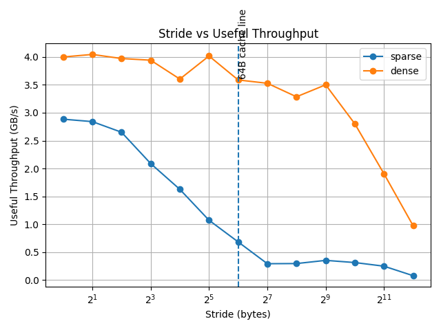
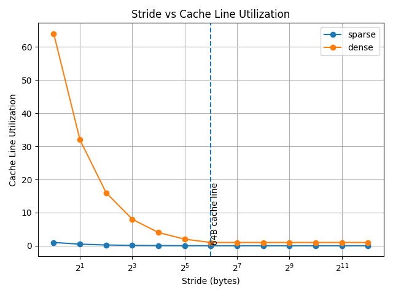

00-Cache Line Effect: Measuring Spatial Locality¶
This lab investigates how memory is transferred at cache-line granularity and how spatial locality affects performance.
We experimentally compare two access patterns:
- Sparse: touch 1 byte per step
- Dense: touch 64 bytes per step (full cache-line utilization)
Experimental Setup¶
- Working set size: 8 MB
- Repetitions: 16
- Flush policy:
once - Compiler flags:
-O2 -march=native - Assumed cache line size: 64 bytes
Two throughput metrics are measured:
Useful Throughput¶
useful_GBps = bytes_touched / elapsed_time
Represents the actual bytes accessed by the program.
Traffic Throughput¶
traffic_GBps = estimated_cacheline_bytes / elapsed_time
Represents memory movement at cache-line granularity.
Additionally:
utilization = useful_GBps / traffic_GBps
This approximates how efficiently each fetched cache line is used.
Key Observation at Stride = 64 Bytes¶
At stride = 64 bytes, each access aligns with a cache-line boundary.
| stride | mode | useful_GBps | traffic_GBps | utilization |
|---|---|---|---|---|
| 64 | dense | 3.588 | 3.588 | 1.000 |
| 64 | sparse | 0.683 | 43.702 | 0.015625 |
Interpretation¶
Cache-Line Utilization¶
Sparse mode:
utilization ≈ 0.015625 ≈ 1 / 64
This means: - Each 64-byte cache line fetch provides only 1 useful byte. - 63 bytes are fetched but unused.
Dense mode:
utilization ≈ 1.0
This means: - The entire cache line is used. - No spatial locality is wasted.
Visual Analysis¶
Useful Throughput¶

Cache Line Utilization¶

The vertical line at 64 bytes highlights the cache-line boundary.
We observe a sharp divergence between sparse and dense modes at this point.
Conclusion¶
This experiment empirically demonstrates:
- Memory is transferred in fixed-size cache-line units (≈64 bytes).
- Sparse access patterns waste most of each fetched cache line.
- Dense access patterns fully utilize each cache line.
- Measured utilization closely matches
1 / cache_line_size.
The results provide strong experimental evidence of cache-line granularity and the impact of spatial locality.
Limitations¶
- Cache line size was assumed to be 64 bytes.
- Prefetching may influence small-stride behavior.
- Traffic estimation for stride < 64 is a lower-bound approximation.
- CPU frequency scaling and background load may introduce noise.
Repository¶
Source code and full benchmark data are available in:
02-memory-hierarchy/00-cache-line-effect